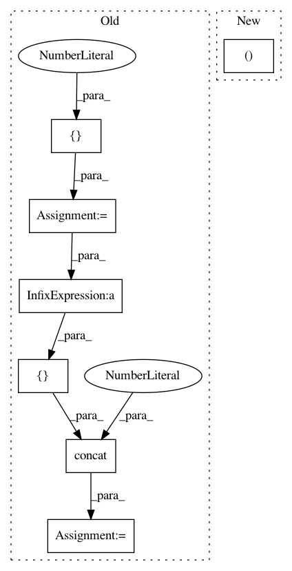

982db1e3e4097b2fa2727bddf05307633dd6df83,tf_agents/bandits/agents/utils.py,,build_laplacian_over_ordinal_integer_actions,#Any#,81
Before Change
num_actions = get_num_actions_from_tensor_spec(action_spec)
adjacency_matrix = tf.zeros([num_actions, num_actions], dtype=tf.float32)
row_indices = tf.reshape(tf.range(num_actions - 1), [-1, 1])
full_indices = tf.concat([row_indices, row_indices + 1], axis=1)
adjacency_matrix = tf.tensor_scatter_nd_update(
tensor=adjacency_matrix,
indices=full_indices,
updates=tf.ones([num_actions - 1], dtype=tf.float32))
adjacency_matrix = adjacency_matrix + tf.transpose(adjacency_matrix)
degree_matrix = tf.linalg.tensor_diag(tf.reduce_sum(adjacency_matrix, axis=1))
laplacian_matrix = degree_matrix - adjacency_matrix
return laplacian_matrix
After Change
adjacency_matrix = np.zeros([num_actions, num_actions])
for i in range(num_actions - 1):
adjacency_matrix[i, i + 1] = 1.0
adjacency_matrix[i + 1, i] = 1.0
laplacian_matrix = np.diag(np.sum(adjacency_matrix,
axis=0)) - adjacency_matrix
return laplacian_matrix
In pattern: SUPERPATTERN
Frequency: 3
Non-data size: 7
Instances
Project Name: tensorflow/agents
Commit Name: 982db1e3e4097b2fa2727bddf05307633dd6df83
Time: 2020-03-12
Author: no-reply@google.com
File Name: tf_agents/bandits/agents/utils.py
Class Name:
Method Name: build_laplacian_over_ordinal_integer_actions
Project Name: openai/baselines
Commit Name: 69f25c6028d71e23a7b267b0e1071ad216290f91
Time: 2018-05-01
Author: peterzhokhoff@gmail.com
File Name: baselines/a2c/policies.py
Class Name: MlpPolicy
Method Name: __init__
Project Name: openai/baselines
Commit Name: 69f25c6028d71e23a7b267b0e1071ad216290f91
Time: 2018-05-01
Author: peterzhokhoff@gmail.com
File Name: baselines/ppo2/policies.py
Class Name: MlpPolicy
Method Name: __init__